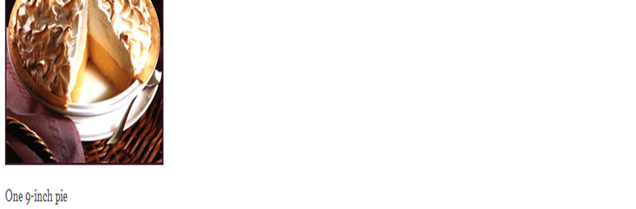

Mamas HomeMade Lemon Meringue Pie
15-Minute Greek Garbanzo Bean Salad
Rich in Protein and dietary fiber, this fresh-tasting salad provides 11% of your Daily Value (DV) for protien and 26% DV for dietary fiber. It only takes minutes to prepare and gets tastier the longer it marinates. Make this quick and easy recipe a regular additions to your Healthiest Way of Eating.

15 minutes
- 1 Cup White Sugars
- 2 tablespoons all-purpose flour
- 3 tablespoons cornstarch
- 1/4 teaspoon salt
- 1 1/2 cups water
- 2 lemons, juiced and zested
- 2 tablespoons butter
- 4 egg yolk, beaten
- 1 (9 inch) pie crust, baked
- 4 egg white
- 6 tablespoons white sugar
- Preheat oven to 350degrees F (175 degrees C)
- In a medium sause pan ...
- Whisk together 1 cup sugar, flour, cornstarch, and salt.
- Stir in water, lemon juice and lemon zest
- Cook over medium high heat,stirring frequently
- Stir in bottle
- place egg yolk in small bottle and gradually whisk in 1/2 cup of hot sugar mixture
- Remove from heat
- Pour filling into baked pastry shell
-
In a large glass or a metal bowl
- Whip egg whites until foamy
- Add Sugar Gradually
- Spead meringue over pie, sealing edges to the crust
-
Bake in preheated oven for 10 minutes, or until meringue is golden brown